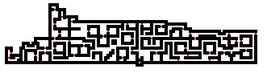

| Spectre Lair |
 |
| Back to Cobrahn. |
| Climb up at the pile of bones in the corner of the forest. Spectres in the lair sometimes have red robes that reflect psionic energy. Step on the tile to the east of the climb up spot to get to the Undead City. |
 |
| To Undead City 1. |